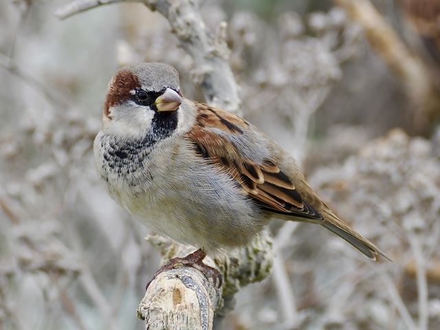
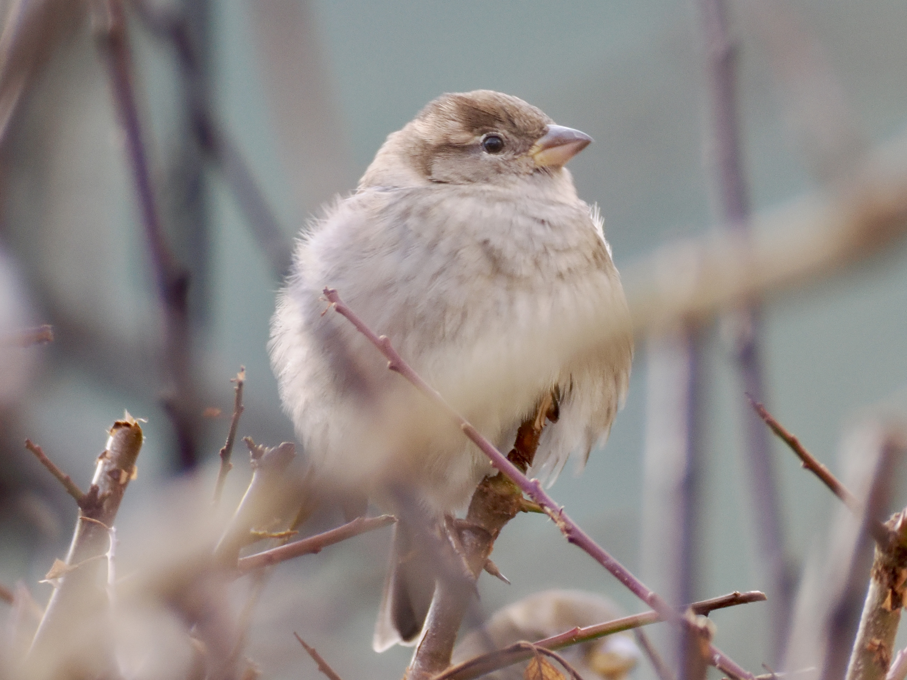

House Sparrow
Passer domesticus
Order: Passeriformes
Family: Passeridae

The familiar sparrow. Male is a brown bird with a grey cap, black bib and white cheeks.

Female has a brown eye stripe. Despite being familiar and the most counted garden bird in the UK (according to Big Garden Birdwatch), they are not common enough to give the impression of pigeon-grade ubiquity.